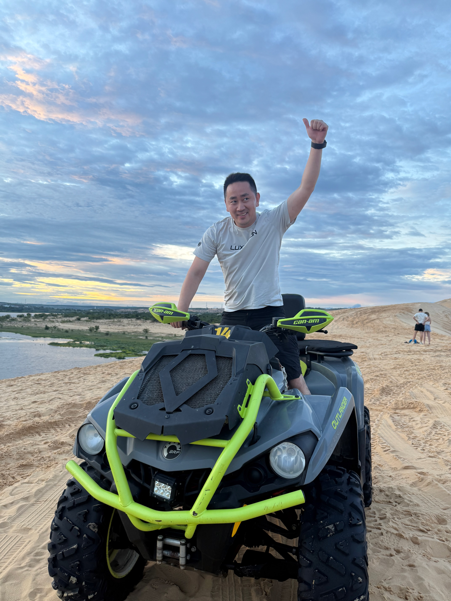

Hi, I'm Chao.
Android engineer with six years of experience, based in Vancouver. Ex-IBM, ex-Salesforce.
These days I'm exploring AI: I run a multi-agent setup around OpenClaw, keep Codex and Claude Code open daily for side projects, and spend a lot of time sharpening the workflow around all of it.